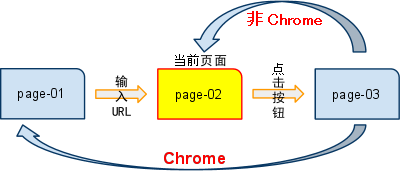
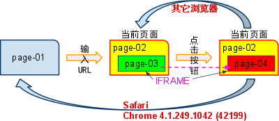
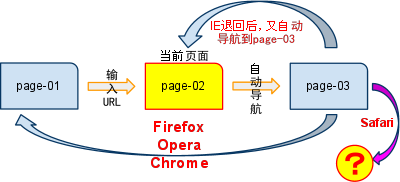

BX2004: 浏览器后退按钮在各浏览器中的行为在某种情况下不一致
标准参考
无
问题描述
后退按钮的差异。
造成的影响
点击后退按钮可能失效。
受影响的浏览器
| 所有浏览器 |
|---|
问题分析
一、浏览器后退操作
各浏览器下，都有前进/后退的操作按钮，一般情况下的表现都是一致的。但是，当页面上存在某些特殊的操作时，将会导致各浏览器下，后退的结果不一致。
下面将列举一些导致后退操作不一致的情况，详见下一小节。
二、差异及可能产生的问题
影响各浏览器下，回退操作不一致的情况有：window.open 操作，动态改变 IFRAME 的 src 属性操作， location.href 赋值操作。下面将一一给予重现、说明。
1、window.open 操作影响回退
Chrome 下，使用 window.open 方法打开新页面，新页面的地址信息不会记录到浏览历史记录中。
请观察如下代码：
<script type="text/javascript">
function windowOpen(){
window.open('page-03.html', '_self');
}
</script>
<input type="button" value="window.open" onclick="windowOpen()" />
注：以上源码在 page-02 中。浏览器的初始页面为 page-01，输入 page-02 的 url 地址导航到 page-02，然后点击 page-02 页面中的 INPUT[ value = "window.open" ] 按钮，页面导航 到page-03。整个过程如下图所示：
此时，点击浏览器上的后退按钮，观察各浏览器下的回退结果，汇总如下：
列举差异的表格：
| IE | Firefox | Safari | Opera | Chrome | |
|---|---|---|---|---|---|
| 点击后退按钮浏览器回到的页面 | page-02 | page-02 | page-02 | page-02 | page-01 |
由上表可知，Chrome 浏览历史记录中，未记录用 window.open 打开的页面地址信息。它的回退如下图所示：

2、动态改变 IFRAME 元素的地址操作，影响回退
Chrome 的早先版本和 Safari，对页面中 IFRAME 的地址变化，不做浏览历史记录。
请观察如下代码：
<script type="text/javascript">
function changeIframeSrc(){
var _iframe = document.getElementById('_iframe');
_iframe.src = 'page-04.html';
}
</script>
<input type="button" value="changeIframeSrc" onclick="changeIframeSrc()" />
<iframe id="_iframe" src="page-03.html"></iframe>
注：以上源码在 page-02 中。浏览器的初始页面为 page-01 ，输入 page-02 的 url 地址导航到 page-02，然后点击 page-02 页面中的 INPUT[value="changeIframeSrc"] 按钮，页面中的 IFRAME 由 page-03 导航到 page-04 。整个过程如下图所示：

此时，点击浏览器上的后退按钮，观察各浏览器下的回退结果，汇总如下：
| IE Firefox Opera | Safari | Chrome5.0.375.7 dev | Chrome4.1.249.1042 (42199) | |
|---|---|---|---|---|
| 点击后退按钮浏览器回到的页面 | page-02 | page-01 | page-02 | page-01 |
从上表可知，Chrome 的早先版本和 Safari，对页面中 IFRAME 的地址变化，不做浏览历史记录。它的回退如下图所示：

3、直接执行 window.location 赋值操作影响回退
在页面加载后，直接执行 window.location 赋值操作。Firefox Opera Chrome 下将不对执行操作的页面做浏览历史记录；IE 下可回退到执行操作的页面，但又马上自动导航；Safari 下的情况比较特殊，将在下一小节单独说明。
请观察如下代码：
<script type="text/javascript"> window.location = "page-03.html" 或 window.location.href = "page-03.html" </script>
注：以上源码在 page-02 中。浏览器的初始页面为 page-01，输入 page-02 的 url 地址导航到 page-02，接着执行如上代码，页面自动被导航到 page-03。整个过程如下图 所示：

此时，点击浏览器上的后退按钮，观察各浏览器下的回退结果，汇总如下：
| IE | Firefox Opera Chrome | Safari | |
|---|---|---|---|
| 点击后退按钮浏览器回到的页面 | 先退回到page-02然后又导航到page-03 | page-01 | Safari下情况比较特殊下一小节中单独讨论 |
由上表可见，直接执行 window.location 赋值，各浏览器下的回退结果差异较大。它们的回退请参见下图所示：

另，如果 "window.location" 赋值操作不是在页面载入后自动执行的话，所有浏览器下的回退结果将一致，请观察如下实例：
<script type="text/javascript">
function locationHref(){
window.location = "page-03.html";
}
</script>
<input type="button" value="location.href" onclick="locationHref()" />
此时，单击回退按钮，所有浏览器下，都将回退到 page-02，如下图所示：

4、Safari下直接执行 window.location 赋值的情况比较特殊
Safari 下，直接执行 window.location=URL 赋值，然后点击浏览器的后退按钮，它的效果和执行代码所在的位置有关系。如果该代码出现在 IFRAME 元素之后时，效果将同 IE（后退到 page-02，然后又自动导航到 page-03），如果该代码前无 IFRAME 元素，则退回到 page-02，且代码之后的元素不被解析。具体请看下面分解。
... <body> <iframe id="_iframe" src="page-04.html"></iframe> <script type="text/javascript"> window.location = "page-03.html"; </script> </body>
注： 以上源码在 page-02 中。浏览器的初始页面为 page-01，输入 page-02 的 url 地址导航到 page-02，接着执行如上代码，页面自动被导航到 page-03。整个过程如下图 所示：

此时，点击浏览器上的后退按钮，观察 Safari 下的回退结果：
| Safari | 备注 | |
|---|---|---|
| 点击后退按钮浏览器回到的页面 | 先退回到page-02然后又导航到page-03 | 效果同IE |
修改如上代码（去掉 IFRAME 元素），如下：
... <body> 11111 <script type="text/javascript"> window.location = "page-03.html"; </script> 22222 </body>
此时，点击浏览器上的后退按钮，观察 Safari 下的回退情况：
| Safari | 备注 | |
|---|---|---|
| 点击后退按钮浏览器回到的页面 | page-02 | 此时页面上的内容为： 11111 注意：22222 未显示（在window.location=URL后的代码不被解析） |
解决方案
以上所提到的情况，我们应该尽量避免，我们期望随着各浏览器新版本的发布，相应的问题也能得到修复，如 Chrome 的新版本就修复了 IFRAME 地址改变不记录历史记录的问题。
另外，如果有必要，可考虑在服务端进行地址跳转。
参见
知识库
相关问题
测试环境
| 操作系统版本: | Windows 7 Ultimate build 7600 |
|---|---|
| 浏览器版本: |
IE6 IE7 IE8 Firefox 3.6 Chrome 4.0.302.3 dev Safari 4.0.4 Opera 10.60 |
| 测试页面: | |
| 本文更新时间: | 2010-07-12 |
关键字
window location open 返回 iframe src